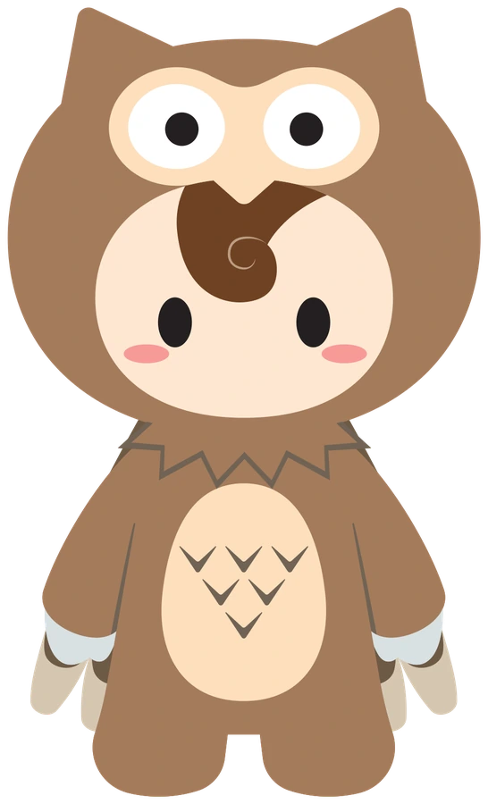

反映済み
YouTube｜概要欄・タイトル
タイトル、概要欄（章タイムスタンプつき）、アイコン。概要欄・タイトルは反映済み。
2026-10-28 確認会議
明日（10/28）、鈴木さん・河合さんと、OWL福祉のYouTube・公式LINE・特典を確認する。

作成: 星崎／まとめ 2026-10-27。特典は仮モック（数字はサンプル）。クライアントへ出るものではなく、社内確認用。
チャンネル説明にも、公式LINEとLPの申込先の文面を用意している（反映は下の一覧で確認）。
タイトル、概要欄（章タイムスタンプつき）、アイコン。概要欄・タイトルは反映済み。
固定コメント案、チャンネル説明、アイコン。チャンネル説明・固定コメントは文面を用意（反映は星崎さん側で確認）。
プロフィール画像（YouTubeと同じ）、リッチメニュー（3ボタン→LP）。登録済み。
あいさつメッセージ（テキスト＋カード3枚）、応答メッセージの文面。文面・画像は作成済み。設定状況は星崎さんが確認【要確認】。
最新の三重インタビュー（LINE案内・ナレーション付き、40分24秒）では、右上のQRが本編中ほぼ常時。19分前後に特典の宣伝（およそ30秒）、最後の約1分でもう一度、画面いっぱいの宣伝。この動画
スマホで右側が見切れる問題の修正。修正の指示書は用意済み。本番への反映は確認待ち。
スマホで試せます。一覧: line_gifts_mock_20261025
特典 ①
定員・自己資金などを入れると、初期費用・借入の目安・月の収支（3パターン）・返済の見通しが出る。
元データ 融資支援ナレッジ（報酬単価・コスト構造・融資条件）、事業計画書の実績2件
…/simulator.html
仮モックを開く特典 ②
都道府県を選ぶと、指定申請の窓口・期限・事前相談が分かる（47都道府県）。
元データ 福祉ナレッジの指定権者資料
…/prefectures.html
仮モックを開く特典 ③
10問に答えると、契約前に確認したいポイントが出る（可否の判定ではなく確認の一覧）。
元データ 実務Q&A（物件・消防）、竪穴区画のメモ
…/property.html
仮モックを開く別案: 開業準備の達成度診断（6問・A〜C判定）の仮モックもある（14個の特典案のうちの1つ）。
オレンジの行が、今回とくに合わせたい項目です（加盟金、報酬単価、実績ケース、返信体制、動画の公開方針）。
| # | 確認事項 | 星崎の案 |
|---|---|---|
| 1 | 特典は、この3つ（①シミュレーター ②都道府県別早見 ③物件チェック）で進めてよいか | まず3つで始め、反応を見て足す |
| 2 | 重点①の前提：加盟金は、LPの「0円」とナレッジの「440万円」のどちらで計算するか。月額の費用（サポート費など）の扱い | 現行プラン（LPの0円プラン）に合わせたい。数字は河合さんの確認が必要 |
| 3 | 重点①の報酬単価の更新：いまの表は福岡県の地域単価で、令和8年度改定は未反映 | 改定後の単位に更新してから公開。地域は、まず1地域か全国平均か |
| 4 | 重点①の実績ケースを、匿名で載せてよいか | 載せない選択も可。載せるなら、お客様の許可が必要。確認が取れるまで、仮モックのこの欄は非表示にする |
| 5 | ②の内容の照合：政令市など窓口が複数ある県の記載。誰がどの県を確認するか | 公開前に1県ずつ照合が必要。SVの確認が理想 |
| 6 | ③の内容の妥当性：物件の条件（4LDK以上、居室7.43㎡以上、新耐震、検査済証、竪穴区画など）はFC本部の基準と合っているか | 実務Q&Aから作成。本部の基準と食い違いがないか、確認したい |
| 7 | 重点LINEの返信体制：「1営業日以内に返信します」と書いてよいか。誰が返信するか | 守れない約束は書かない。体制が決まってから確定 |
| 8 | 重点動画の公開方針：いまは限定公開。鈴木さんから「消してほしい」との意向があった。再公開する前提か、差し替えるか | LINEへの誘導は、動画が公開されている前提。方針の確認が必要 |
| 9 | 概要欄・LINEに載せる運営者情報（社名・所在地）。現在は「OWL福祉事業（運営：株式会社ランバード）」。所在地は未記載 | 所在地を載せるなら正本の確認が必要 |
| 10 | 診断（達成度診断）も特典に加えるか | 3つが固まってからで十分 |
| 表示 | クリック | 費用 | CPC | CV | |
|---|---|---|---|---|---|
| 594 | 54 | ¥42,836 | ¥793 | 0 | |
| Yahoo | 84 | 8 | ¥3,044 | ¥380 | 0 |
このページの数字は、2026-10-27 の社内まとめから写したものです。特典の計算結果はサンプルで、収益や融資の可否を保証しません。